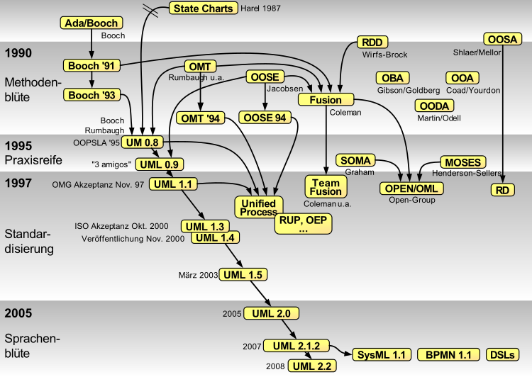
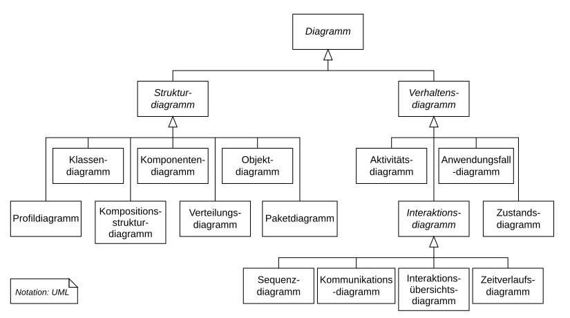
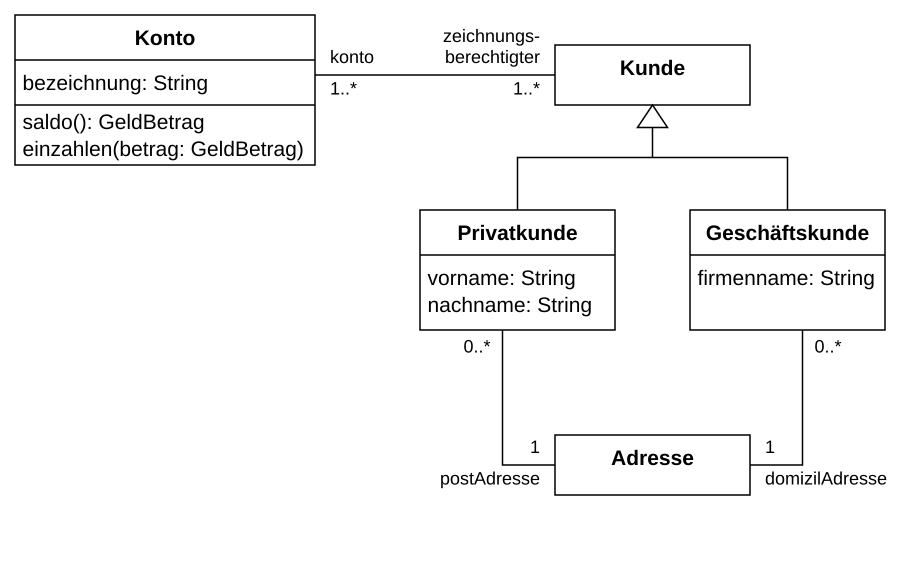
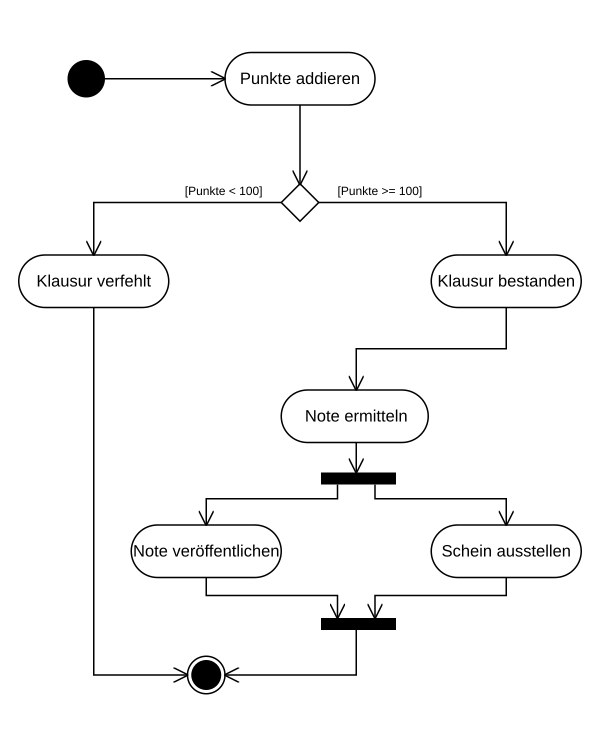
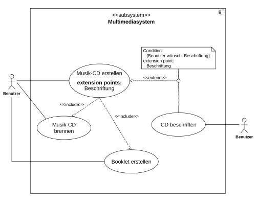
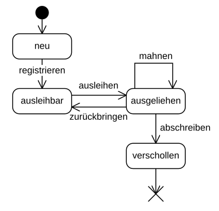
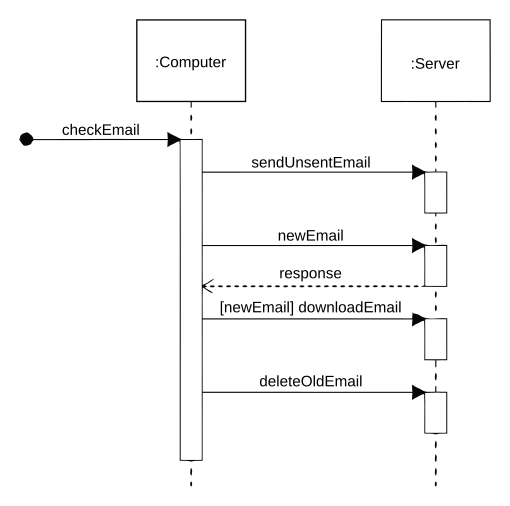
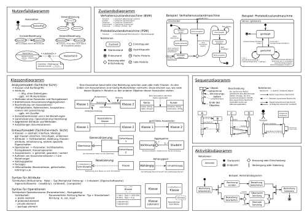

Kurze Einführung in die UML
Definition
UML ist eine standardisierte grafische Sprache zur Spezifikation, Visualisierung und Dokumentation von Software- und Systemarchitekturen.
Verwendung
- Analyse und Design: Abbildung von Anforderungen und Architektur
- Kommunikation: Gemeinsame Sprache zwischen Stakeholdern
- Dokumentation: Nachvollziehbare Projektdokumente
Praxisrelevanz
- Reduziert Missverständnisse im Team
- Beschleunigt Einarbeitung neuer Entwickler
- Erleichtert Wartung und Erweiterung bestehender Systeme
Historie
- Mitte 1990er Jahre: Konsolidierung mehrerer Modellierungsmethoden (Booch, OMT, OOSE)
- 1997: Erste UML-Version von der OMG verabschiedet
- Seitdem kontinuierliche Weiterentwicklung (aktuell UML 2.x)

OOP-Bezug
UML wurde primär für objektorientierte Systeme entworfen. Klassen, Objekte, Vererbung und Schnittstellen lassen sich direkt visualisieren.
UML in der IHK-Prüfung
In den IHK-Prüfungen für Fachinformatiker (Anwendungsentwicklung / Systemintegration) wird UML regelmäßig als Werkzeug zur Planung und Visualisierung eingesetzt.
AP1
- Ziel: Verständnis für grundlegende Diagrammtypen und deren Erstellung
- Diagrammarten wie Klassendiagramme, Aktivitätsdiagramme oder Anwendungsfalldiagramme werden häufig verlangt.
- Fokus liegt auf theoretischem Wissen, Diagrammverständnis und korrekter Notation.
AP2
- Häufig genutzte Diagrammtypen:
- Anwendungsfalldiagramme
- Klassendiagramme
- Aktivitätsdiagramme
- Sequenzdiagramme
- Zustandsdiagramme
- Sie dienen zur Darstellung:
- von Strukturen und Abläufen
- von Systeminteraktionen
- zur Visualisierung der Umsetzungsschritte
Einsatz von UML-Diagrammen in der IHK-Dokumentation
UML-Diagramme unterstützen eine bessere Verständlichkeit und wirken sich positiv auf folgende Bewertungskriterien aus:
- Dokumentation der Lösung
- Nachvollziehbarkeit der technischen Umsetzung
- Visualisierung komplexer Zusammenhänge
| Abschnitt der Projektdokumentation | Empfohlene UML-Diagrammtypen | Nutzen |
|---|---|---|
| Projektbeschreibung | Anwendungsfalldiagramm | Darstellung der Anforderungen aus Nutzersicht |
| Analyse / Ist-Zustand | Aktivitäts- oder Klassendiagramm | Struktur und Abläufe im aktuellen System |
| Technische Umsetzung / Planung | Klassendiagramm, Sequenzdiagramm, Zustandsdiagramm | Struktur, Interaktionen und Zustandsveränderungen |
| Qualitätssicherung / Testszenarien | Zustands- oder Aktivitätsdiagramm | Dokumentation von Systemverhalten unter Testbedingungen |
Überblick der 14 Diagrammtypen

Hinweis:
- Kursiv dargestellte Begriffe dienen nur der Organisation und Strukturierung des Diagramms (z. B. „Interaktionsdiagramme“ oder „Strukturdiagramme“).
- Diese kursiven Begriffe sind keine offiziellen UML-Diagrammtypen.
- Konkrete UML-Diagrammtypen sind in normaler Schrift dargestellt.
Tabelle zu den 5 IHK-relevanten Diagrammtypen
| Diagrammtyp | Kurzbeschreibung | Beispielgrafik |
|---|---|---|
| Klassendiagramm | Statische Struktur: Klassen, Attribute, Methoden, Beziehungen |
 |
| Aktivitätsdiagramm | Ablauf von Aktionen und Workflows (ähnlich Flussdiagramm) |
 |
| Anwendungsfalldiagramm | Nutzer-System-Interaktionen, Anforderungen aus Nutzersicht |
 |
| Zustandsdiagramm | Lebenszyklus eines Objekts: Zustände und Zustandsübergänge |
 |
| Sequenzdiagramm | Zeitliche Abfolge von Nachrichten und Methodenaufrufen zwischen Objekten |
 |
Überblick Notation

Mögliche Tools zur Erstellung
Sie können Diagramme auf verschiedene Arten umsetzen:
- Papier und Stift (dann digitalisieren, z. B. per Foto oder Scan)
- Dia (kostenloses UML-Tool - wird im LinkedIn-Learning-Kurs verwendet)
- Excalidraw
- draw.io
- Lucidchart
Textbasierte Visualisierungstools
- PlantUML (textbasierte UML-Erstellung)
- mermaid (integrierbar in MD)
- ASCII-Art (für schnelle Entwürfe in Verbindung mit KI)
Ressourcen
- PlantUML
- Wikipedia: UML
- Offizielle UML-Spezifikation (OMG)
- LinkedIn Learning: Ralph Steyer